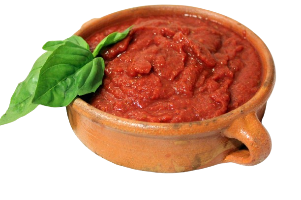
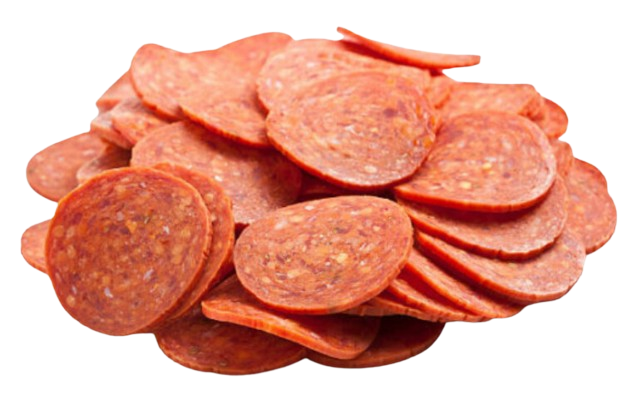
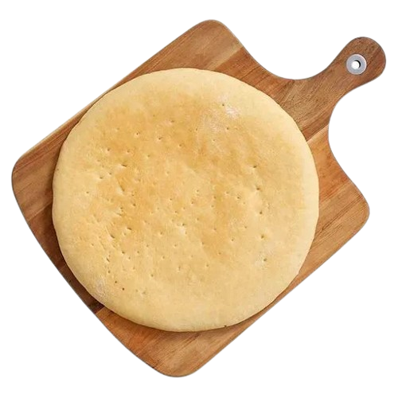

INGREDIENTES
En Pizzería Don Luciano, seleccionamos cuidadosamente cada ingrediente para garantizar la mejor calidad. Utilizamos tomates frescos, embutidos de primera, quesos auténticos y masa artesanal hecha a diario, creando pizzas que destacan por su sabor y frescura.

SALSA DE TOMATE
Elaborada con tomates frescos, especias y un toque de albahaca, aporta el equilibrio perfecto entre acidez y dulzura.

PEPPERONI
Embutido ahumado de sabor picante y jugoso, que añade una capa de intensidad a cada rebanada.

QUESO
Mezcla de quesos fundidos, principalmente mozzarella, que añade cremosidad y un toque salado que complementa a la perfección los otros ingredientes.